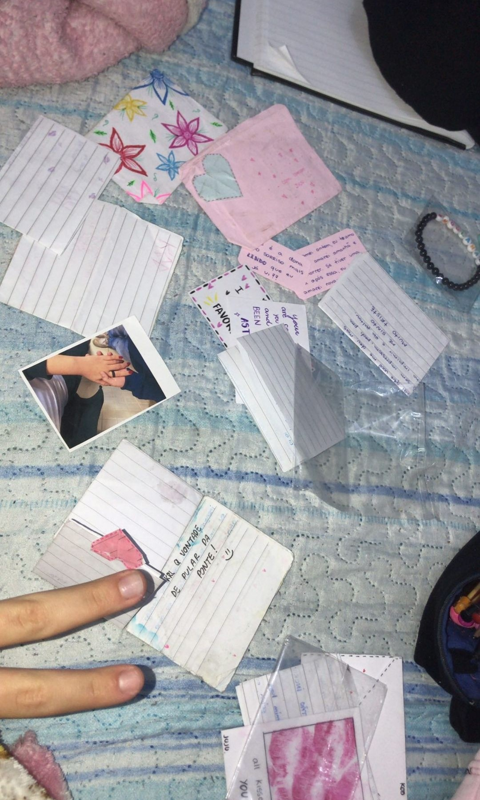
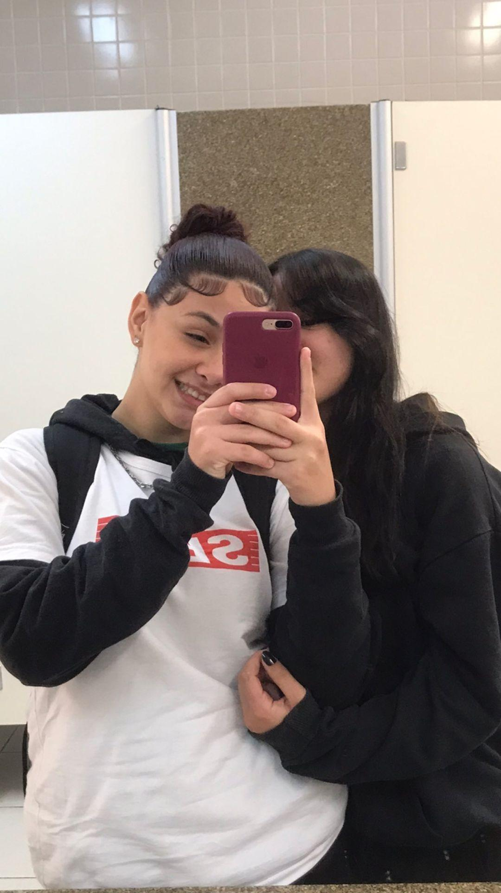
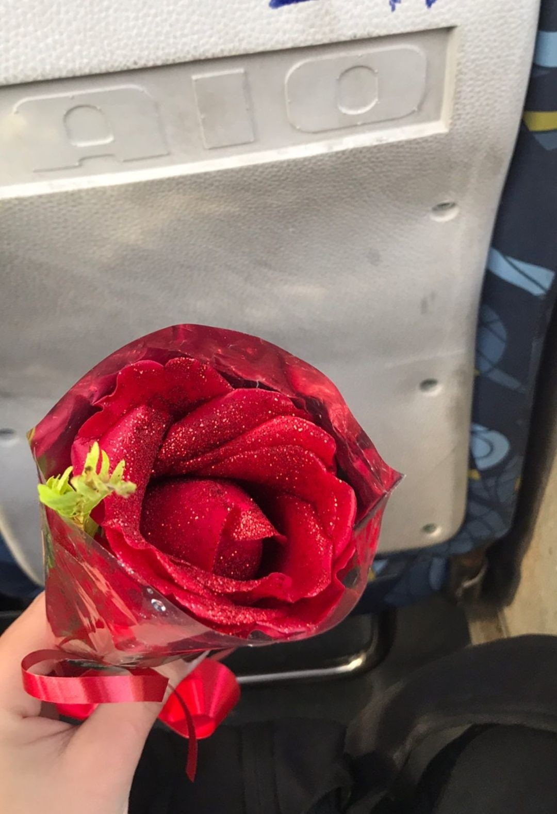
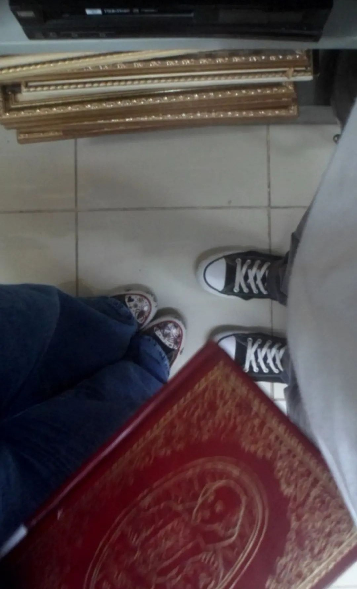
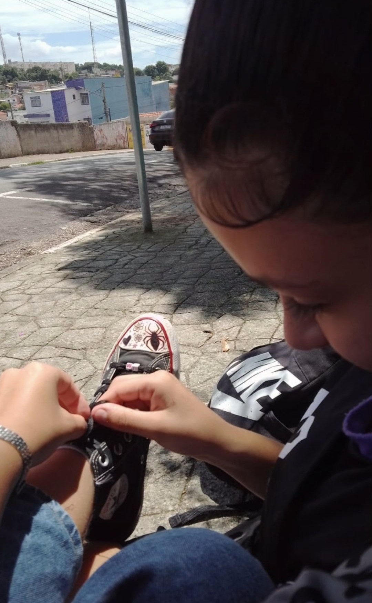
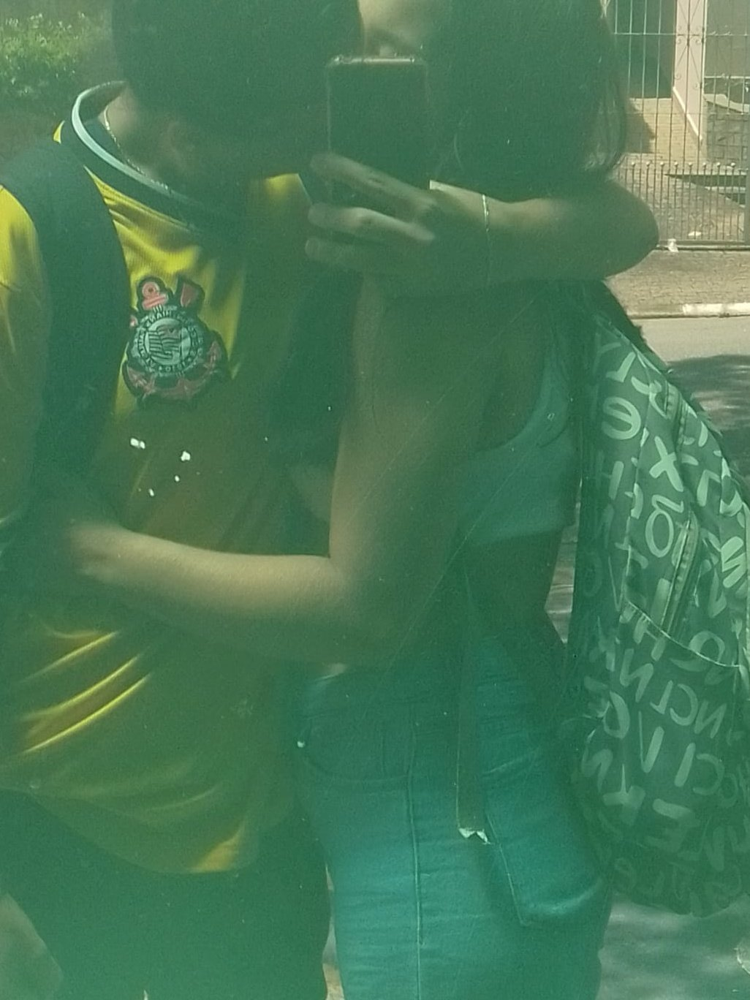
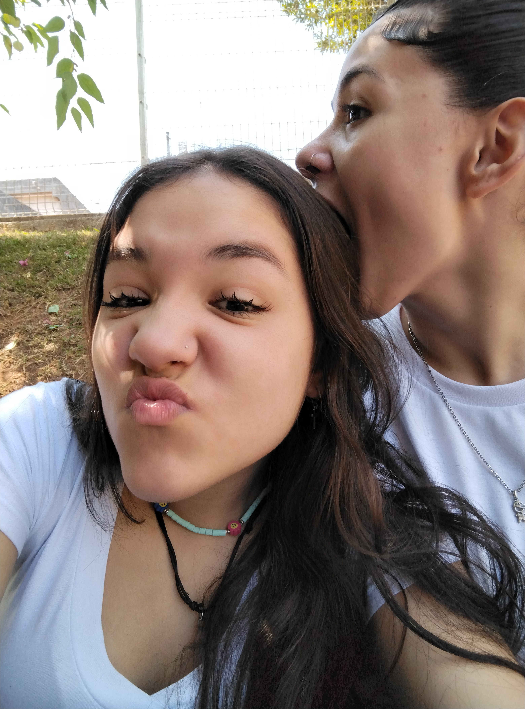
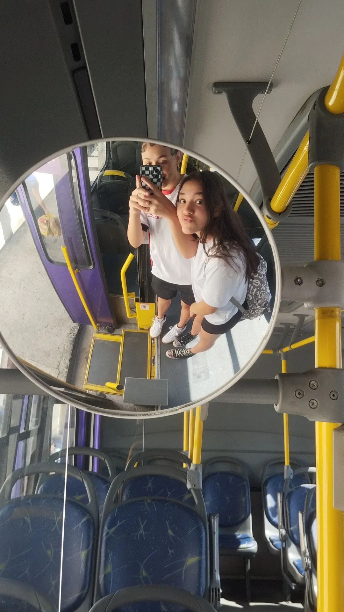
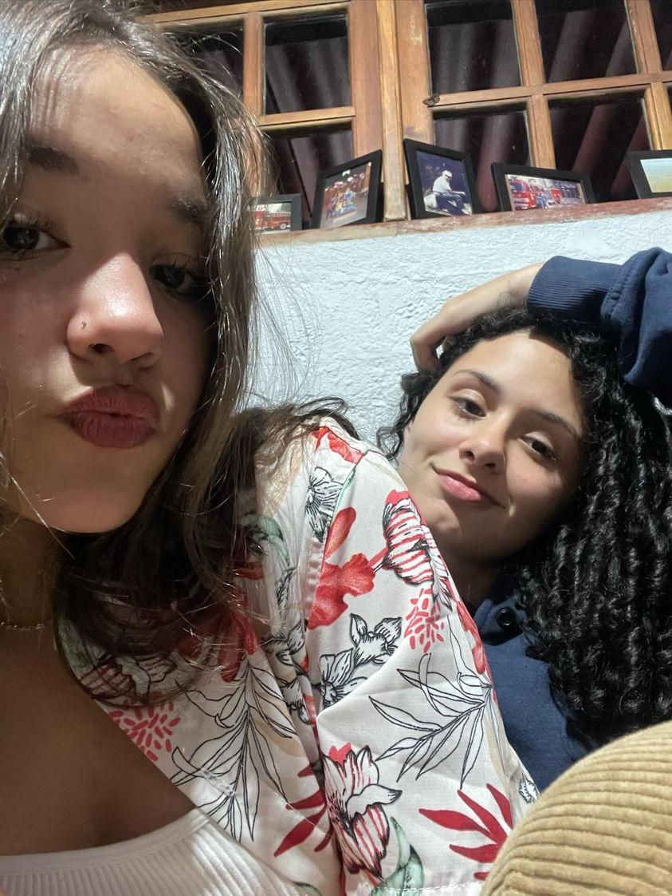

Nossa História

Nossa história começou de um jeito especial: com cartas que tornaram tudo mais intenso e bonito. Cada palavra escrita à mão era como um pedaço do nosso coração no papel.
Aquelas cartas eram mais do que simples mensagens; eram como abrir um livro sobre nós dois. Nosso começo foi marcado pela emoção de compartilhar sonhos, medos e pensamentos, como se as palavras criassem uma ponte entre nós.
Guardamos essas cartas como tesouros, lembranças de como tudo começou. Elas são testemunhas do nosso crescimento, desde as primeiras linhas até as declarações de amor que continuamos a construir juntos. Assim, cada página amarelada conta a história do nosso amor, uma história que se desdobra a cada dia.
Momentos Especiais

Nossas quartas-feiras ganharam um toque especial, um jogo de olhares que falava por si só. Entre risos e conversas triviais, nossos olhos trocavam mensagens cheias de segundas intenções, criando um enredo só nosso.
Cada quarta-feira virou um capítulo secreto, onde os olhares diziam mais do que as palavras permitiam. Nas entrelinhas dos nossos sorrisos.

A primeira rosa que te dei foi meio desajeitada, mas era pra te impressionar, sabia? Entrei nessa tentando conquistar você de um jeito diferente. Lembro do nervosismo, mas quando você pegou aquela rosa, parecia que todo o esforço valia a pena. Era só uma flor, mas tinha um monte de sentimentos misturados ali, e foi o início de algo que cresceu mais do que eu imaginava.

No nosso primeiro date, decidimos nos perder juntos entre as prateleiras da biblioteca. Sabia que você é fascinado por livros, e achei que seria o lugar perfeito para começarmos nossa história. Entre risadas, trocas de olhares e algumas descobertas literárias, aquele dia na biblioteca se tornou o prólogo de uma história que mal podíamos esperar para escrever juntos.

A porta da biblioteca era nosso refúgio, onde passávamos horas conversando sem perceber o tempo voar. Entre sorrisos e histórias compartilhadas, aquele cantinho se transformou em um pedacinho especial do nosso mundo. O murmúrio das nossas palavras misturava-se ao vento suave, criando uma melodia única que embalava nossos dias. Ali, na simplicidade daquele lugar, construímos memórias que brilham como pequenos tesouros em nosso coração.

Nossos beijinhos são como pinturas em tela, espalhando carinho por todos os lugares que frequentamos. Cada toque é uma promessa de afeto, transformando o comum em extraordinário.

E os olhares? São como notas musicais, uma linguagem única que fala volumes sem palavras. Entre beijos e olhares, escrevemos nossa história, cheia de ternura e conexão.



Planos para o Futuro
Nossos planos são simples, mas carregam a promessa de uma vida plena e cheia de amor. Queremos viver juntas em paz, construindo nosso próprio refúgio de tranquilidade e harmonia. Cada momento, desde os dias calmos até as alegrias efervescentes, será uma oportunidade de aproveitar a vida ao máximo. Nosso desejo é cultivar uma jornada repleta de cumplicidade, onde o respeito e a alegria se entrelaçam, transformando cada instante em uma lembrança preciosa do nosso amor.